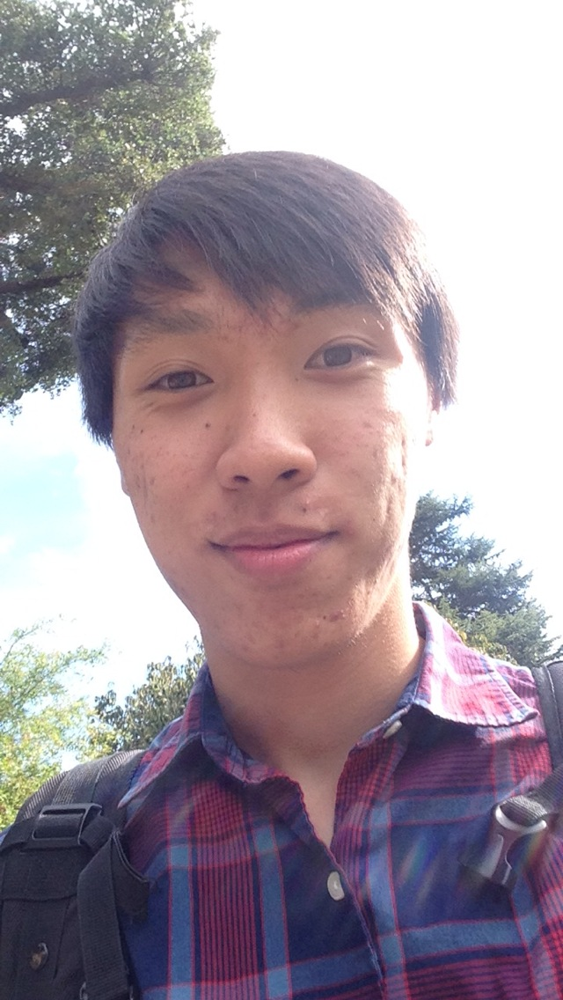

Hi! I enjoy Korean pop music, tennis, games, and food!

I'm a Chinese-American born & raised in Northern Virginia but going to school in the Bay Area. I've taken 2 years of Korean language and I'm an Internal officer for K-Popular, the K-pop club at Berkeley, so if you also like K-pop, come talk to me about it! This semester, I'm also exploring a lot of my other interests, including volleyball and a cappella. I'm currently obsessed with Little Gem's Belgian waffles. I hope to travel the world when I graduate, see new things & eat amazing foods.
Eric Bo
Professional
Hello! I am currently a senior at UC Berkeley studying Electrical Engineering & Computer Science.
This semester, I'm taking CS 161 Computer Security and CS 168 Internet Architecture. I really enjoy teaching, so after teaching CS 61A, the introductory CS course, for 3 semesters and mentoring Junior Mentors in CSM (Computer Science Mentors), I am currently lab assisting for one of my original students who is now a TA! I am also hoping to learn more design skills this semester through student-taught DeCals or in my own time. In the future, I hope to work on designing applications that feel beautiful through ease of use, not just aesthetic.